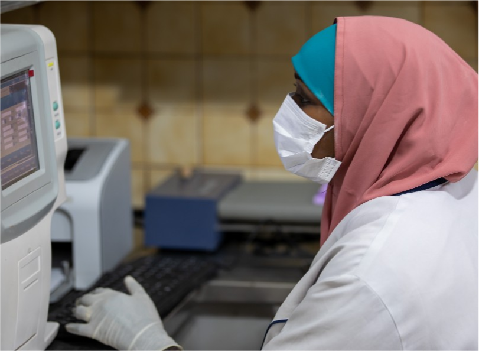
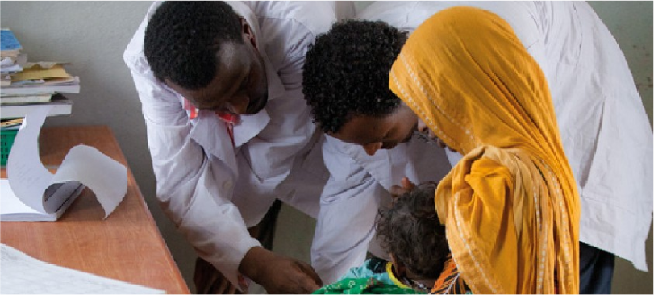
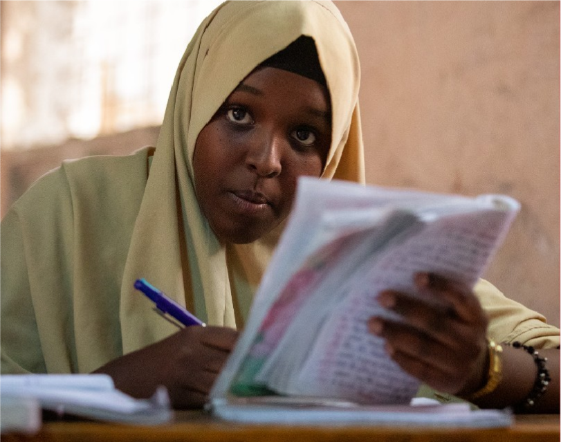
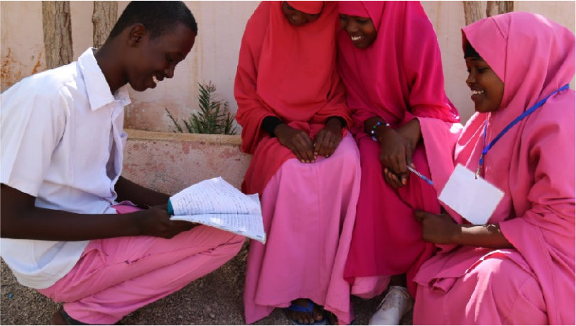

1. Strengthening health security, disease surveillance,
preparedness and response (Djibouti, Ethiopia,
Eritrea, Kenya and Somalia - $520 million):

- Strengthen national and regional disease
surveillance and pandemic control measures:
training healthcare workers and laboratory technicians
to support rapid expansion of testing; reinforcing
laboratory infrastructure to support expansion of testing
without crowding out other services; strengthening
storage, cold-chain and distribution networks to enable
effective and timely deployment of testing, vaccines and
therapeutics; enhancing disease surveillance systems,
including digital decision-support tools and integrating
into overall health management information systems;
building digital contact tracing and communication tools to support “test, trace, treat” strategies; development
of costed national action plans for health security;
procurement, distribution and delivery of medical
commodities (vaccines, tests and therapeutics); developing
NPHI roadmaps; development of costed National Action
Plan for Health Security (NAPHS).
2. Strengthening regional regulatory and training
systems for pharmaceuticals, medical commodities,
and health professionals ($214 million):

- Strengthen regulations for dealing with response
to COVID-19 pandemic and over the medium-term:
develop a harmonized, regulatory process that will fast-track
the market authorization of safe and effective COVID-19
vaccines, therapeutics and tests; facilitate joint approval of
clinical trials on any COVID-19 related product; address the
medium-term agenda of regulatory harmonization to tackle
COVID-19.
3. Supporting Skills Development and Advancement to build a prosperous, integrated and peaceful Horn of Africa (Djibouti, Eritrea, Ethiopia, Kenya, and Somalia-- $600 million):

- Enhance teacher’s skills through technology and peer support: complement national efforts with targeted regional efforts to strengthen content knowledge and pedagogy through digital delivery models; build peer-to-peer platform to support teachers; promote teacher role models.
- Provide technology enabled skills development programs for youth: help scale-up skills development by providing short courses on ICT and English Language skills for out of school youth; reinforce ICT training centers.
4. Supporting regional “Identification for Development -ID4D” to streamline the movement of people, goods, services and capital across borders, lay the foundation for future digital economy integration, and enhance access to basic services (Ethiopia, Somalia, $150-250 million)

- Strengthen the legal and institutional framework: invest in comprehensive ID-enabling laws, regulations and institutions.
- Establish or modernize foundational ID systems: develop digital ID and civil registration systems.
- Facilitate access to services at national and regional levels: invest in enhanced interoperability between national and regional systems; establish common regulatory and technical frameworks to promote mutual recognition.